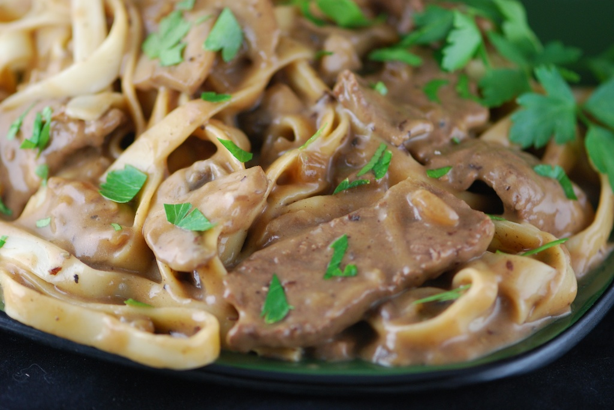

Home
Steak Pasta

A creamy delicacy that I can barely ever afford to make but absolutely love top enjoy. Super filling!
Ingredients
- 200-400g steak
- Cooking oil
- 2 tbsp Olive oil
- 2 cloves garlic minced
- 3 bellpeppers
- 1 onion
- 30g taco seasoning
- 350g protein pasta
- 250ml cooking cream
- 2 tbsp butter
- 3/4 cup salsa
- 50g cheddar cheese
Steps
- Prepare your steak seasoning by combining 15g of taco seasoning and olive oil
- Rub seasoning on steak and cook in a pan with a bit of cooking oil until done
- Add butter into pan and cover steak with it as it melts
- Remove steak and cut into bite sized cubes
- Add bellpeppers, onion and garlic, stir fry for 5 minutes
- Add remaining taco seasoning and stir
- Add cooking cream and salsa to vegetables and stir until hot
- Add cheese to mix
- Combine with pasta and enjoy together!!